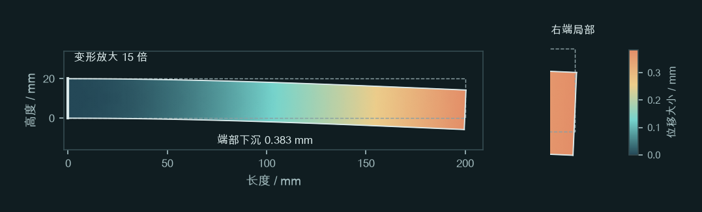
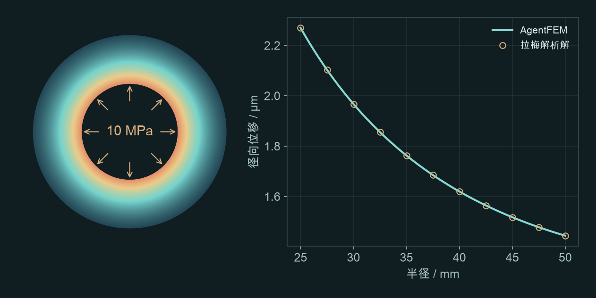
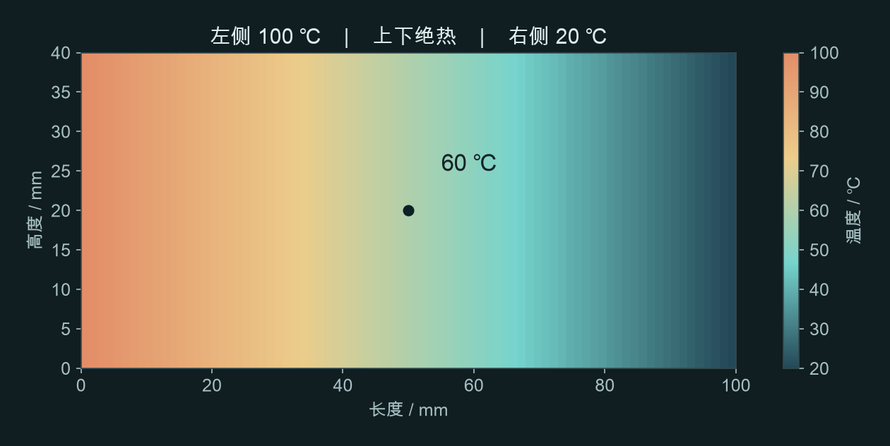
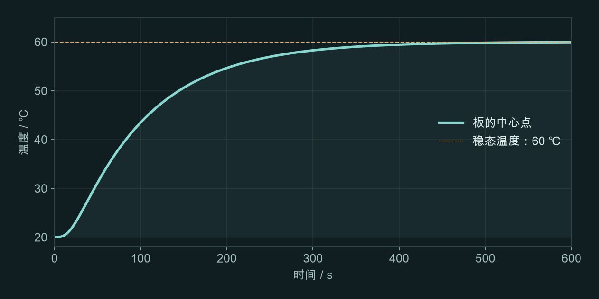

AGENTFEM / 入门教程
第一次用 AI 做有限元
四个小案例，复制提示词就能开始。先算出一个结果，再试着改变条件。
开始前，只确认一件事
你使用的 AI 助手能否调用 AgentFEM。以 Codex 为例，它可以在获得授权后使用本地命令行或 MCP 工具运行软件。只有聊天功能、没有接入计算工具的 AI，不会因为收到这些提示词就自动完成仿真。
打开一个用于练习的项目文件夹，在 AI 助手里发送：
请先检查你能否实际调用 AgentFEM、创建项目并运行计算。告诉我项目会保存在哪里。若尚未安装或连接，请先帮我完成配置；需要安装或授权时先询问我。
确认可用后，先发送下面这段约定，等 AI 回复后，再从下方选择一个案例，发送它的提示词。
接下来，我会发送具体的有限元练习题。收到题目后，请为该题新建一个 AgentFEM 项目，保留建模文件和计算结果；检查设置后再运行，输出一张结果图、关键数值及单位，并用两三句话解释。若题目缺少必要信息，再向我确认。现在只需回复“准备好了，请发送题目”，不要开始建模、猜测题目或提供选题。
还没有安装？给老师或帮助配置的同学看这里
先按 AgentFEM 安装说明准备计算环境，确认 agentfem doctor 可用，再按 AI 助手连接说明接入。Windows 使用 WSL2。Codex 的 MCP 文档介绍工具连接方式。一次配置好后，日常练习从复制提示词开始。
从一张变形图开始
这根梁会下沉多少？
把一根钢梁的左端固定，在右端向下施力。先看它弯成什么样，再读出端部下沉量。
请用 AgentFEM 算一根钢悬臂梁：长 200 mm、高 20 mm、厚 10 mm，弹性模量 210 GPa、泊松比 0.3。左端固定，右端均匀承受向下的总力 200 N。采用二维平面应力、小变形线弹性，忽略重力。给我变形图和右端中点下沉量，图上注明变形放大倍数。

你会得到什么
一张变形图，以及右端中点的下沉量。左端不动，越靠近右端位移越大。
参考下沉量：0.383 mm
先看右端中点的位置，再看数值和单位。图中的变形放大了 15 倍，实际下沉只有约 0.38 mm。梁理论估算约 0.381 mm，可作为量级检查。
再问一句
把总力改成 400 N，其他不变。把两次的端部下沉量放在一起比较，告诉我为什么会这样。
在线弹性、小变形条件下，载荷翻倍，位移也应近似翻倍。你已经完成了第一次参数对比。
建模说明
二维模型要把 10 mm 厚度计入总力换算：右端均布面力为 1 MPa。参考结果使用二次单元、80 × 8 网格；不把固定端角点的应力峰值当作强度结论。
换一个受力问题
内压会把圆筒撑大多少？
给厚壁圆筒施加均匀内压。看内壁向外移动多少，再比较内外壁的响应。
请用 AgentFEM 算一个长厚壁圆筒：内半径 25 mm、外半径 50 mm，弹性模量 210 GPa、泊松比 0.3，内压 10 MPa、外壁自由。采用线弹性轴对称模型，取 100 mm 长的一段，并约束轴向应变为零。给我内壁径向位移和沿壁厚的位移曲线，用拉梅解析解核对。

你会得到什么
内壁的径向位移数值，以及从内壁到外壁的位移曲线。径向位移就是沿半径向外移动的距离。
参考内壁膨胀：2.270 μm
图上的圆环表示圆筒横截面。右侧曲线中，横轴从内壁走向外壁，纵轴表示向外移动多少；有限元曲线应与解析解接近。
再问一句
把外半径改成 60 mm，内半径和内压不变。比较两次内壁径向位移，说明加厚筒壁有什么影响。
这次改变的是结构尺寸。比较时只改一个条件，才能看清结果变化来自哪里。
建模说明
这是轴向应变为零的长圆筒理想化，不是自由伸长或带封头的压力容器模型。参考网格为径向 40 × 轴向 4，二次单元；内壁位移与拉梅解吻合。
从受力转到传热
板的中间会有多热？
一块金属板，左侧保持热、右侧保持冷。经过足够长的时间，温度不再变化时，中间是多少度？
请用 AgentFEM 做二维稳态导热：金属板长 100 mm、高 40 mm，导热系数 45 W/(m·K)。左边保持 100 ℃，右边保持 20 ℃，其余边界绝热，没有内部热源。给我温度云图、中心点温度，以及从左到右的温度曲线。

你会得到什么
一张从左到右逐渐变冷的温度云图，以及中心点温度。稳态表示温度已不再随时间变化。
参考中心温度：60.0 ℃
中心点位于左右两端的中间。均匀材料、没有内部热源、上下绝热时，沿长度的温度近似线性变化，所以中心温度是 60 ℃。
再问一句
把导热系数改成 90 W/(m·K)，其他不变。比较温度分布和热流，解释为什么温度可能没变。
两端温度固定时，导热系数翻倍会增大热流，但这个例子的稳态温度分布不变。参数变了，云图不一定要变。
建模说明
计算只涉及固体导热，不包含空气流动和热应力。参考网格 80 × 16；内部统一使用 K，展示换算为 ℃。
最后，让结果动起来
它是怎样慢慢热起来的？
还是上一块板，这次从整块 20 ℃ 开始加热。我们关心升温过程，而不只是最后一张图。
请用 AgentFEM 计算金属板的升温过程：二维板长 100 mm、高 40 mm，初温 20 ℃，导热系数 45 W/(m·K)、密度 7800 kg/m³、比热 500 J/(kg·K)。从 0 秒起左边保持 100 ℃，右边保持 20 ℃，其余边界绝热、无内部热源。计算 600 秒，时间步长 2 秒。给我中心温度随时间的曲线，以及每 10 秒一帧、能用 ParaView 播放的温度结果。

你会得到什么
中心温度逐渐升高的曲线，以及可以播放的温度场时间序列。
600 秒时中心温度：59.94 ℃
中心不会瞬间变成 60 ℃，热量需要从左侧传过来。看曲线什么时候开始明显升温、什么时候逐渐变平，再与上一例的稳态温度比较。
再问一句
将时间步长减到 1 秒，再算一次。把两条中心温度曲线叠在一起，检查原来 2 秒的步长是否足够。
这次你学会了检查计算设置。时间步长变小后结果接近，才能更有把握地解释升温过程。
建模说明
参考计算为隐式 Euler、300 个增量。600 秒不是强制设置的平衡时刻，59.94 ℃ 是该时刻的数值结果。XDMF 与配套 H5 文件要放在一起，打开 XDMF 后选择 Temperature 并播放。
会问这一类问题，就能继续做下去
把“帮我做个仿真”说具体一点：什么结构、怎样受力或加热、想看什么结果。这就是提示词最重要的内容，不需要写得像程序。
第一次不必自己补全所有细节。告诉 AI 哪些条件已知，让它先问清楚缺少的条件；得到结果后，再问“如果只改变这个条件，会怎样？”
如果 AI 只给了代码，或者结果和这里不一样
可以追问：“请实际运行并打开结果图，告诉我项目和输出文件在哪里；若运行失败，先说明原因，不要把预计结果当成计算结果。”数值略有差异时，先核对单位、载荷、约束、单元和网格，再检查时间步长。不要只看云图颜色是否一样。
参考图于 2026-10-07 使用 AgentFEM 0.4.0.dev0 / DOLFINx 0.11.0 计算。数值与版本记录。这些小模型用于入门学习，不承担工程安全判定。